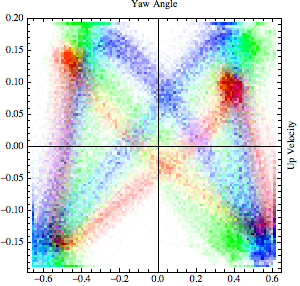
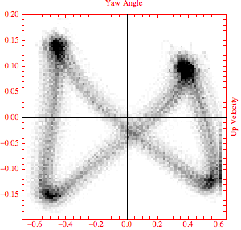
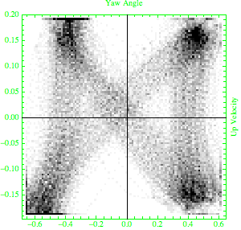
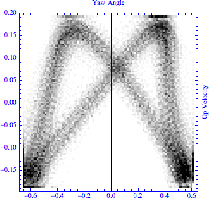
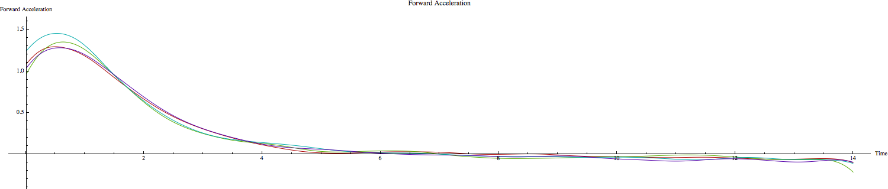

Kayak motion analysis
This page quickly presents some example results obtained by Vincent Lecrubier between 2010 and 2013.
Methodology
The methodology applied for this studies follows a linear pipeline, from physics data to visualization:
- Motion data is captured during kayaking sessions using a variety of sensors, including catapult minimax, but also ad-hoc smartphone applications.
- Raw accelerometric and GPS data is post-processed using an ad-hoc motion ata analysis framework developped by Vincent Lecrubier.
- Processed data gives information about actual physical phenomenoms such as forces, moments and power applied by the kayaker.
- Visualization of the processed data using Wolfram mathematica allows to access various technical insights about technical aspects of paddling.
Reports
- Comparing the paddling style of three flatwater sprint athletes on the same event: Each kayaker is represented by a specific color, and differences between plots of different colors shows the differences in paddling styles. This type of analysis gives insights about cross-compatibility of individual athletes inside a crew, as well as other interesting information such as a lack of symetry in the paddler technique.
|  |
 |
 |
 |
- Evaluating the usefulness of fins on Slalom kayaks: Evaluating the impact of the addition of fins on slalom kayaks. This study confirmed that fins had no negative impact in Slalom kayaks top speed. Following this study, fins are now widely used in olympic level competitions.

Source
For more information and requests, contact Vincent Lecrubier